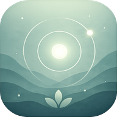

📲 تثبيت التطبيق

Deep-Focus
تطبيق تدريب التركيز والانتباه
من خلال تمارين بصرية هادئة
مدة الجلسة
١ دقيقة
٣ دقائق
٥ دقائق
١٠ دقائق
١٥ دقيقة
وضع التدريب
👁️
تتبع العين
🖱️
تتبع المؤشر
🌊
المشتتات
🌬️
التنفس
💭
الذاكرة
⚡
تكيفي
ابدأ الجلسة
📊 الإحصائيات
⚙️ الإعدادات
01:00
|
التركيز: ١٠٠٪
⏸ توقف مؤقت
✕ إنهاء
٣
استعد للتركيز
🌿
أحسنت!
اكتملت جلسة التركيز بنجاح
-
المدة
-
التركيز
-
فقدان التركيز
🔄 جلسة أخرى
📊 عرض الإحصائيات
🏠 الرئيسية
←
الإحصائيات
←
الإعدادات
المظهر
الوضع الداكن
تحويل واجهة التطبيق للألوان الداكنة
الجلسة
حجم النقطة
الحجم الافتراضي لنقطة التركيز
22
سرعة الحركة
سرعة النقطة المتحركة
5
مستوى الصعوبة
مستوى التحدي الابتدائي
سهل
متوسط
صعب
إظهار المشتتات
عرض عناصر بصرية خفيفة في الخلفية
ملء الشاشة
تشغيل الجلسة بملء الشاشة تلقائياً
البيانات
مسح جميع البيانات
حذف الإحصائيات والجلسات المحفوظة
مسح
حول التطبيق
Deep-Focus
الإصدار ١.٠.٠ · أداة تدريب التركيز المعرفي